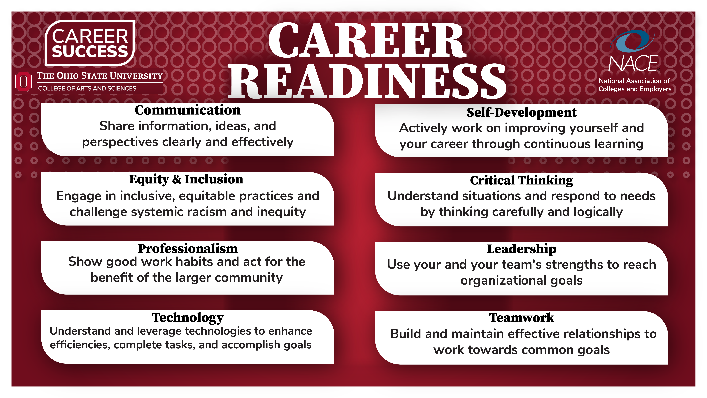

Essential Skills for Study and Employment in Software Engineering
a) Written Summary
Software engineering success is a blend of technical prowess and generalized skills like communication, collaboration, problem solving and professionalism. The widely embraced career readiness models define eight essential competencies which employers want to see: communication, teamwork, leadership, equity and inclusion, critical thinking, professionalism, technology, and career and self development, which build on employability across occupations and industries [1]. Research in higher education has shown that soft skills enhance programming and systems knowledge to deliver improved quality, alignment with stakeholders and environmental adaptability in rapidly evolving settings [3]. These competencies are converted into daily habits in modern software craft that have brought quality code, reflective practice, disciplined version control, and pragmatic risk management [2].
Developing such skills in the course of study is rewarded immediately in more understandable requirements, less taxing hand offs, and reduced integration defects. Common gaps in systematic reviews are not identified in syntax but in coordination, appropriate communication to the audience as well as reasoning and constraint [3]. Aligned with coursework to an employability rubric (e.g. NACE) makes growth tangible: write brief technical overviews with diagrams; learn feedback literacy through peer reviews; learn to make trade offs through structured problem solving [1], [2], [3]. The capabilities speed up the onboarding process post-graduating, and in cross functional impact, where influence and alignment are equally important as architecture [1] which was covered in part [3]. Slowly using AI as a co pilot in brainstorming and writing will accelerate the iteration process but ensure academic integrity - check every assertion and provide the correct citation to an approved reference list [4].
